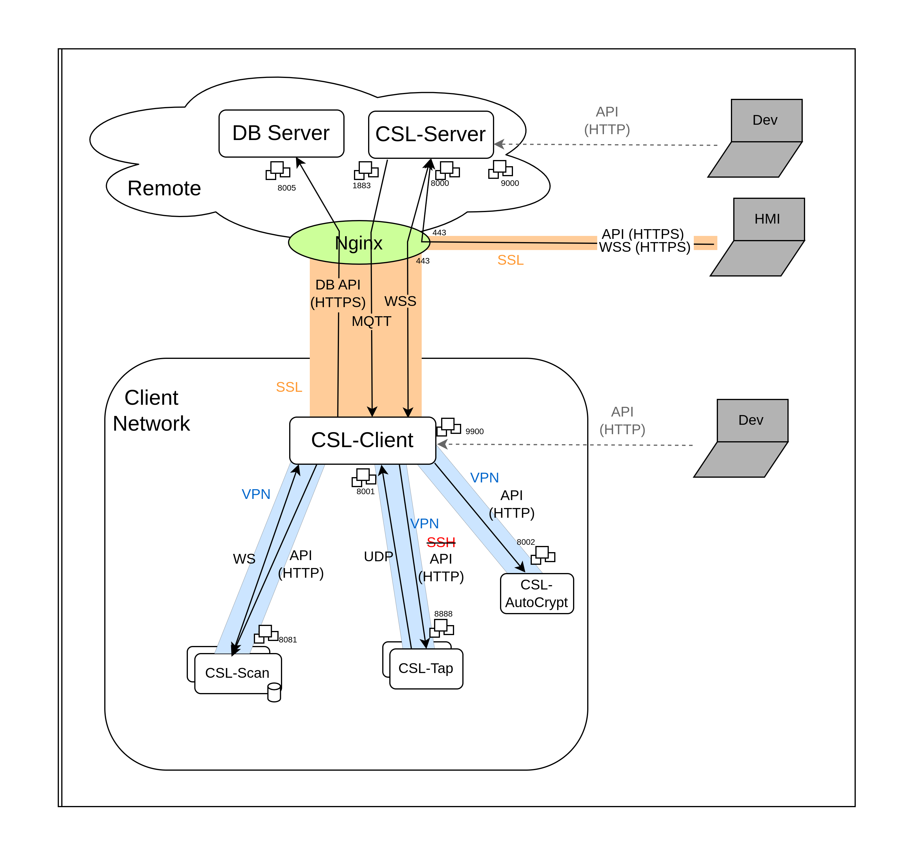

Getting started¶
1 CSL-installer¶
In CSL-installer project:
$ .setup.sh
....
Do you want to login using you username/token [Y/n] # Y (first time, n to keep previous login)
...
Should CSL create a self-signed certificate ? [y/N] # y to create a new self-signed certificate
...
Download CPE/CVE database? [Y/n] # not necessary
...
Creating the api key ...
API KEY -5iP5HtAE.Z4s3SgsYUJPazCM7XbRyBAq3bXCzXHVG- has been created # API key to save : 5iP5HtAE.Z4s3SgsYUJPazCM7XbRyBAq3bXCzXHVG
The environment variables file for csl client is created in csl_client.env
...
Tap`s name [tap01]: # Enter to have the default name
2 CSL-W (client and server)¶
In the w-csl project, we need to store the certificate. We need first to add the right path to the certificate file,
in my case : CERT_FILE=../csl-installer/config/nginx/certs/csl_hmi.crt
nano ./create_certificate_store.sh
Now we can just execute the script ( if problem with key tools we need to install openjdk)
./create_certificate_store.sh # may need change if computer in other language that english
3 Check connexion¶
Now we can verify that everything runs as excepted ( the API key is ok):
docker logs -f csl_client
This logs may contain errors due to missing modules or db. We should just check that we are connected to the server:
...
main.CSLIDSMainClient: Connected to server
...
4 Configure IntelliJ¶
We need to configure the JDK version, for this branch we use Java 17, but in others branch we may use Java 11(temurin).
You can download the JDK following this path :
Project Structure > Project Settings > Project > SDK > Download JDKYou need to move the cacerts created during phase 3 to the package app/src/main, so that Gradle can recognize it.
Now lets configure the run/debug configuration:
Create a new Gradle configuration
Name it : w-csl(server or client) [clean build run]
Fill in the Run input with the following command :
clean build run -b buildServer.gradle -x tests
The -x tests is to avoid running the tests, which may cause building failure
Fill in the Gradle project path with
w-csl:appPaste the following environment variables:
CSL.ALERT_VIEWER.IP=localhost
CSL.DISCOVERY.MANAGER_IP=localhost
CSL.DISCOVERY.MANAGER_PROTOCOL=http
CSL.DISCOVERY.MANAGER_TIMEZONE=UTC
CSL.GLOBAL.API_KEY=5iP5HtAE.Z4s3SgsYUJPazCM7XbRyBAq3bXCzXHVG # the API key saved above
CSL.GLOBAL.FORCE_HOST_NAME_RESOLUTION=true
CSL.GLOBAL.IP_SERVER_REMOTE=localhost
CSL.GLOBAL.LAUNCH_WEB_API_SERVER=true
CSL.GLOBAL.PORT_SERVER_REMOTE=0
CSL.GLOBAL.SERVER_REMOTE_URL_PREFIX=/jws
CSL.GLOBAL.USE_SSL=true
CSL.IDS_CONF.HISTORY_LENGTH=60
or
CSL.ALERT_VIEWER.IP=localhost;CSL.DISCOVERY.MANAGER_IP=localhost;CSL.DISCOVERY.MANAGER_PROTOCOL=http;CSL.DISCOVERY.MANAGER_TIMEZONE=UTC;CSL.GLOBAL.API_KEY=5iP5HtAE.Z4s3SgsYUJPazCM7XbRyBAq3bXCzXHVG;CSL.GLOBAL.FORCE_HOST_NAME_RESOLUTION=true;CSL.GLOBAL.IP_SERVER_REMOTE=localhost;CSL.GLOBAL.LAUNCH_WEB_API_SERVER=true;CSL.GLOBAL.PORT_SERVER_REMOTE=0;CSL.GLOBAL.SERVER_REMOTE_URL_PREFIX=/jws;CSL.GLOBAL.USE_SSL=true;CSL.IDS_CONF.HISTORY_LENGTH=60
Add VM options to set up the SSL environment:
-Dlogback.configurationFile=./main/resources/logback.xml
-Djavax.net.ssl.trustStore=./cacerts.jks
-Djavax.net.ssl.trustStorePassword=changeit
Apply, repeat for the other main(client or server) and run the configurations.
NOTE: if running there is an error about the version of java. We may need to define the right version for the compiler:
Settings > Build, Execution, Deployment > Compiler > Java compiler
CSL-Server & CSL-Client configuration¶
You need to duplicate the
app/src/main/resources/runconfig/CSLConfigIDS_template.jsonfile and rename it toCSLConfigIDS.jsonin the same folder.TODO : add informations here
5 Run the client¶
For instance, we will run the client out of the container:
docker stop csl_client
It may take several seconds to stop. Then, we can launch the client from IntelliJ with the configuration from above. Again some errors may happen because of missing modules, but we will observe that some services are initialized and some API endpoints registered.
The API should now work, and we can test it with Postman sending a POST to localhost:9900/status with the following body:
{
"cmd":"get_status"
}
An answer similar to the following is expected:
{
"discovery" : {
"is_http_api_reachable" : true,
"is_websocket_connected" : true
},
"taps" : {
"active_taps" : []
}
}
Organisation of project¶
General architecture¶
For building the project correctly, Gradle need a specific organisation of the project. The main folders are:
src/main/java: contains the main code of the project.src/main/resources: contains the resources of the project, like the configuration files.src/test/java: contains the tests of the project.src/test/resources: contains the resources for the tests.
Details of the folders¶
src/main/java: contains the main code of the project.com: contains all the packages for the project CSL.csl: contains all the business-logic classes of the CSL-client, the real and bulk functionalities of CSL-Client.alert: contains all alert managing files.autoCrypt: TODO : completecore: contains all the global Context files.defaultclasses: generic classes.devdb: TODO : completeids: contains different tools for managing the IDSintercom: contains different packages for managing the communication with the different connexions: APIHandlers, MQttHandlers, … It contains also some json formating tools.interfaces: contains the bulk of interfaces of this packagelogger: contains some tools for logging. REMARK : same classes seem mixed withdefaultclassesmodules: contains modules (only IDS module).monitor: contains classes for the activity history and monitoring.udp: contains classes for UDP connexions. REMARK: maybe move this package into web?util: contains helper tools for this packageweb: contains helper tools for connexion, like authentication, proxy, low level web sockets, or servers.
ucsl: interfaces some tools, some json classes and interfaces.wcsl.ids: processor, managers and factories for the IDS.
lib.unpacked.org: some downloaded and modified manually packets.main: contains the main classes, services and other classes in the interface with the outer of the CSL-Client.demo: demo and tests filesextensions: TODO : completehelp: TODO : completeservices: router for the API commands separated in services depending on the scope of these commands. These services may contain some business logic.test: dummy tests for API runner and UDP connexionutil: some tools.xcom: web socket and Main Remote. REMARK : maybe this can be moved intocom?CSLIDSMainClient.java: JVM entrypoint for the CSL-Client. Quite similar to CSL-Server.CSLIDSMainServer.java: JVM entrypoint for the CSL-Server. Quite similar to CSL-Client.KillMosquito.java: TODO : complete
Configuration files¶
Gradle¶
build.gradle: contains the main configuration for the build of the project, including dependencies, SSL environment for running, tests environment.buildServer.gradle: apply template from build.gradle+run the mainServer.buildClient.gradle: apply template from build.gradle+run the mainClient.settings.gradle: contains the settings for the project, mainly the name of the project necessary for the gradle building.gradle.properties: contains the properties for the gradle building, mainly the SSL environment for building .
Other¶
cacerts.jks: contains the certificates for the SSL environment.runconfig/CSLConfigIDS.json: contains all the configuration for the project.logback.xml: TODO : complete
Connexions¶
The different elements of the project and the connexions between them:
Database Remote Server
CSL-Server : remote
CSL-Client : installed in the client network. It plays the role of concentrator and forwarder.
Module CSL-Scan : installed in the client network.
Module CSL-Probe : installed in the client network.

NOTE : The API HTTP of CSL-Client is only for develop, it has the same endpoints that the Secured API from CSL-Server.
NOTE : The connexion to CSL-Probe was made through SSH, but it will be changed to an API secured with a VPN.
MQTT:¶
Description: protocol for message queue/message queuing service. This socket is used to send notifications from CSL-Server to CSL-Client, which may trigger some actions at CSL-Client. However, the important data is not sent through the MQTT socket but through the WSS, which are in parallel. notifications send from CSL-Server to CSL-Client, which may trigger some actions at CSL-Client.
Architecture: CSL-Server plays the role of the server and the CSL-Client is the client. However, the notifications are sent from the CSL-Server to the CSL-Client.
Package : com.csl.intercom.broker
Initialisation trace at MainClient :
CSLIDSMainClient → JServiceLoader.registerService → DiscoveryService.init → mqttBroker.subscribeToTopic
Initialisation trace at MainServer :
CSLIDSMainServer → CSLContext.instance.postInit → CSLHTTPServer.initServer(JSON) → CSLHTTPServer.initServer(ServerConfig) → WebSocket.registerAll → JServiceLoader.getCSLInterModuleCommunicationManager → CSLInterModuleCommunicationManager → SocketMessageMQTTHandler
WSS:¶
Description: web socket secured by the SSL layer (need of a valid API key). This socket is used to communicate all important information between the CSL-Server and CSL-Client. This is the main channel of communication between the remote CSL-Server and the CSL-Client, placed into the client network.
Architecture: CSL-Server plays the role of the server and the CSL-Client is the client. However, the communication is bidirectional.
Package : com.csl.web.websockets, main.xcom
Initialisation trace at MainClient :
CSLIDSMainClient → CSLIDSMainClient.startRemoteConnectTask → CSLIDSMainClient.connectToServer → WebsocketClientEndpoint
Initialisation trace at MainServer :
CSLIDSMainServer → CSLContext.instance.init → CSLHttpServer
Secured API:¶
Description: API Rest of the Database exposed to the CSL-(TODO : Client or Server). This type of connexion is also used for exposing the public API from CSL-Server to the HMI.
Architecture: Database Remote Server is the server of the API. CSL-Server is the server for the public API.
Package : com.csl.web.database, com.csl.web.websockets, com.csl.intercom.dbapi
Initialisation trace at MainClient : Not used.
Initialisation trace at MainServer :
CSLIDSMainServer → ApiHttpServer().createServer
API:¶
Description: API Rest of a module (CSL-Scan, CSL-Probe). It is exposed to the CSL-Client, which interacts via HTTP requests. Each module has an API which allows part of the communication between CSL-Client and the corresponding module. These HTTP connexions are secured with a VPN.
Architecture: modules are the servers and CSL-Client is the client of all of them.
Package : com.csl.intercom.cslscan
Initialisation trace at MainClient :
CSLIDSMainClient → JServiceLoader.registerService → DiscoveryService.init → ScanAPIHandler
Initialisation trace at MainServer : Not used
WS:¶
Description: web socket for the communication between the CSL-Client and some modules (CSL-Scan). Each of these sockets allows part of the communication between CSL-Client and the corresponding module. These HTTP connexions are secured with a VPN.
Architecture: modules are the servers and CSL-Client is the client of all of them.
Package : com.csl.intercom.cslscan
Initialisation trace at MainClient :
CSLIDSMainClient → JServiceLoader.registerService → DiscoveryService.init → ScanWebSocketHandler
Initialisation trace at MainServer : Not used
UDP:¶
Description: protocol to forward the notifications from CSL-Probe to the socket in the case of the CSL-Client. and to (TODO : ?) in the case of CSL-Server. The received messages are stored into a queue by a listening thread and managed by another thread that reads the queue.
Architecture: CSL-Client is the server side to module (CSL-Probe). CSL-Server plays the role for client side to the HMI. Between the CSL-Client and CSL-Server messages are channeled through the WSS.
Package : com.csl.alert, com.csl.udp, com.csl.web, com.csl.modules, com.wcls.ids
Initialisation trace at MainClient :
CSLIDSMainClient → CSLContext.instance.postInit → CSLUDPServer.initUDPServer
Initialisation trace at MainServer
CSLIDSMainServer → CSLContext.instance.init → CSLAlertManager -- CSLAlertManager.sendAlertToViewerUDP
SSH:¶
Description: protocol for operating network services securely over an unsecured network. This will be changed by a VPN that will secure the network.
Architecture: Suricata IDS is the server and CSL-Client is the client.
Package : main.extensions.SshUtils
Initialisation trace at MainClient : Not used. Initialize at every command
Initialisation trace at MainServer Not used. Initialize at every command
Unix Socket:¶
Description: protocol to communicate in the same machine. This is used in CSL-Probe, between the Suricata IDS and the manager.
Architecture: Suricata IDS is the server for the Command’s socket, but it’s the client for the alert socket. The manager is the client for the commands and the server for the alerts.
Package : Not used
Initialisation trace at MainClient : Not used
Initialisation trace at MainServer Not used
Endpoints¶
Visit : localhost:9900/apihelp (at CSL-Client level) or localhost:8000/apihelp (at CSL-Server level) Should be the same
Modules¶
CSL-Scan¶
Module that verifies if devices are connected with SNMP, and then it recovers the CPE of the devices. The scans are handled in parallel and after every scanned device it sends a notification to CSL-Client which calls the DB-api for sync the data.
The sync happens every 5 minutes (@DiscoveryService.init) and when the scan is started (@ScanWebSocketHandler.subscribeToNotifications.handleFrame). It stops the sync if scan finished.
The CSL-Client receives the information of Scan through the WS (@ endpoint /discovery/ready) and stored. Then, at scheduled time (1 sec), the Client queries the db for last date of modification and updates it if newer (@com.csl.intercom.services.PaginatedSynchronisation.sendData).
CSL-Probe¶
Module that listens to the network flow and send alerts when the custom rules are matched. These rules and other configurations can be customized through the API connexion. The alerts thrown by the IDS and forward through the UDP socket.
In more detail, this module is formed by Suricata IDS and the manager. The manager create the interface between the IDS and the CSL-Client.
In deployment, this module runs into a docker container with the IDS and the manager.
CSL-AutoCrypt¶
Module that manages the certificates. It is connected through a REST API and the modifier endpoints also update the db through the DBAPI. It is based on Vault, we can manage certificates, roles, certification authorities, …